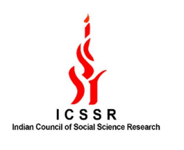

Research Assistant - ICSSR Project P-385 Major Grant - From November 2020 to April 2021

Project carried out at Bharath Vidyapeeth Institute of Management Science and Research, Mumbai
Topic: “Issues in Designing & Sustainability of MOOC: Learning Analytical Model”
Key roles and responsibilities:
- Assisted in filling the online questionnaire
- Assisted in literature review and formatting the project rerport
- Online collection of secondary data
- Online collection of secondary data
- Interpreted statistical analysis data
- Developed several chapters and aligned the complete report for final submission
- Done grammar check for the complete document using Grammarly software